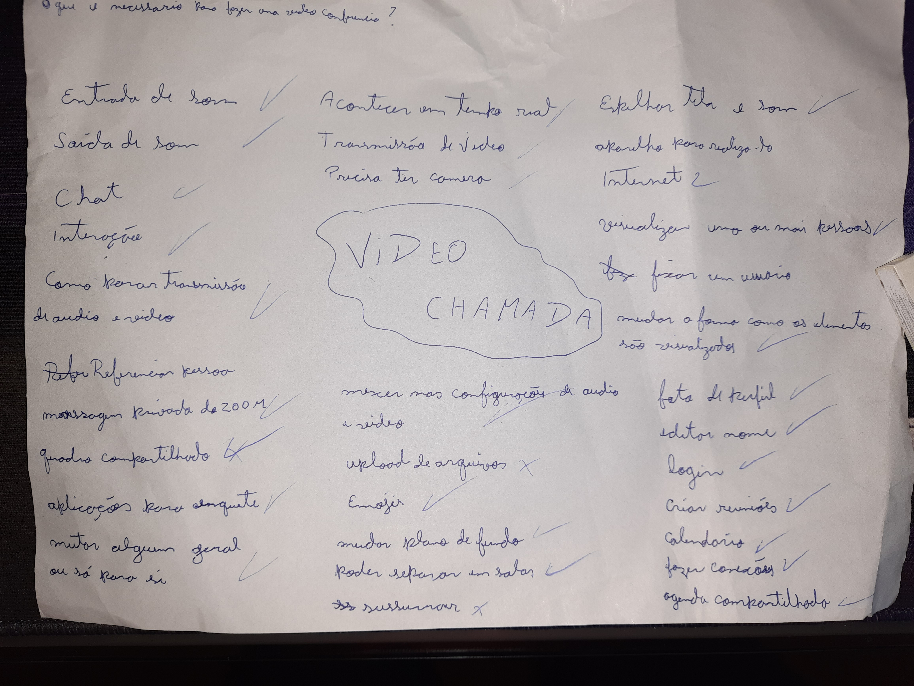

Brainstorming
| Versão | Data | Modificação | Autor |
|---|---|---|---|
| 1.0 | 05/07 | Criação do Brainstorming | Gabriel Sabanai, Samuel Avila |
| 1.2 | 07/07 | Elicitação do Brainstorming em um Backlog | Gabriel Sabanai |
| 1.3 | 12/07 | Documentação do Brainstorming | Gabriel Sabanai |
Tabela de versionamento
Introdução
O Brainstorming é uma técnica utilizada pelo grupo de um projeto que visa deixar fluir ideias e pensamentos sem julgamento entre os membros da equipe, também é ideal sempre ter um mediador que vai prescrevendo todas as ideias relatadas entre a equipe. Tem como objetivo criar novas formas de enxergar um problema e explorar a criatividade dos membros. Logo, o Brainstorming agrega o conhecimento e estimula o pensamento ativo na gestão de problemas (SERRANO, 2022).
Nesse caso, o grupo se baseou em uma pergunta principal, sendo ela: "O que é necesário para realizar uma video conferencia?" e com isso foram jogadas diversas ideias que eram anotadas em uma folha de papel.
Brainstorm
| Local | Data | Hora |
|---|---|---|
| Casa do Samuel | 05/07 | 16:42 |
Tabela de informações
| Membros Participantes |
|---|
| Gabriel Sabanai |
| Samuel Avila |
Tabela de membros participantes
O que é necessário para realizar uma video conferencia?
 Imagem: brainstorming realizado
Requisitos Elicitados
Legendas:
- BS - Brainstorming
- RF: Requisitos Funcionais
- RN: Requisitos Não Funcionais
| ID | Descrição | Tipo | Priorização |
|---|---|---|---|
| BS01 | A video chamada deve acontecer em tempo real para que o usuário tenha resposta instantânea de suas ações | RN | MUST |
| BS02 | A aplicação deve aceitar entrada e saida de som para que o usuário consiga transmitir sua voz | RN | MUST |
| BS03 | A aplicação deve permitir um chat para que o usuário consiga se comunicar por meio de escrita | RF | SHOULD |
| BS04 | A aplicação deve permitir interações, como levantar a mão, para que o usuário possa se comunicar de forma rápida | RF | SHOULD |
| BS05 | A aplicação deve permitir que o usuário consiga se mutar para que seu audio não seja transmitido caso não queira | RF | MUST |
| BS06 | A aplicação deve transmitir o audio de um usuário para outro para que seja possível a comunicação oral | RN | MUST |
| BS07 | A aplicação deve permitir conexão com a camera do usuário para que ele possa utiliza-la | RN | MUST |
| BS08 | A aplicação deve transmitir a imagem da camera entre os usuários para que eles possam se ver | RF | MUST |
| BS9 | A aplicação deve permitir que o usuário possa parar a transmissão de seu video para que o mesmo não seja visto caso não queira | FUNCIONAL | MUST |
| BS10 | A aplicação deve permitir referenciar pessoas no chat da transmissão para que o usuário consiga destacar um usuário em sua mensagem | RF | SHOULD |
| BS11 | A aplicação deve permitir a mensagem privada entre usuários para que os mesmos possam conversar em particular durante uma conferencia | RF | COULD |
| BS12 | A aplicação deve permitir a criações de enquetes para que os usuários possam realizar votações ou tomadas de decisões | RF | COULD |
| BS13 | A aplicação deve permitir que um usuário consiga mutar outro apenas para sí para que não tenha que escutar alguém sem interferir para os outros | RF | WOULDNT |
| BS14 | A aplicação deve permitir que o administrador da reunião possa mutar um usuário para todos os integrantes para que ninguém tenha que escuta-lo | RF | SHOULD |
| BS15 | A aplicação deve permitir que o usuário ajuste as configurações de audio e video dele para que possa controlar a sensibilidade do audio ou o dispositivo que está usando | RF | MUST |
| BS16 | A aplicação deve permitir que um usuário possa compartilhar um quadro de tarefas para que todos os usuários possam visualizar e mexer com ele | RF | WOULDNT |
| BS17 | A aplicação deve permitir que o usuário possa utilizar emojis para que consiga se comunicar de forma rápida e divertida | RF | COULD |
| BS18 | A aplicação deve permitir que o usuário possa mudar o plano de fundo de seu video para que possa ocultar o redor de onde se encontra | RF | SHOULD |
| BS19 | A aplicação deve permitir separar usuários em salas numa mesma video chamada para que os usuários possa realizar atividades com outros usuários especificos | RF | MUST |
| BS20 | A aplicação deve permitir que um usuário possa espelhar sua tela e o seu som para que outros usuários possam acompanhar o que o primeiro esteja fazendo | RF | MUST |
| BS21 | A aplicação deve funcionar apenas com internet para que os usuários tenha um meio de conexão entre sí | RN | MUST |
| BS22 | A aplicação deve permitir que o usuário escolha se quer visualizar uma ou mais pessoas para que ele possa controlar a quantidade de pessoas que quer visualizar em sua tela | RF | SHOULD |
| BS23 | A aplicação deve permitir que o usuário possa fixar um usuário em sua tela para que tenha um foco naquele usuário e que apenas o visualize-o | RF | SHOULD |
| BS24 | A aplicação deve permitir que o usuário possa colocar sua foto de perfil para que outros consigam identifica-lo facilmente | RF | SHOULD |
| BS25 | A aplicação deve permitir que o usuário possa editar seu nome de usuário para que outros consigam identifica-lo facilmente | RF | MUST |
| BS26 | A aplicação deve permitir que o usuário realize o login para que o mesmo possa acessar suas informações salvas | RF | WOULDT |
| BS27 | A aplicação deve permitir que o usuário crie reuniões para que possa realizar as videos conferencias com outros usuários | RF | MUST |
| BS28 | A aplicação deve poder criar um calendario para que o usuário possa acompanhar as reuniões que terá durante os dias | RF | COULD |
| BS29 | A aplicação deve permitir que o usuário faça conexões com outros usuários para que possa ter salvo aqueles que deseja fazer conexões facilmente | RF | WOULDNT |
| BS30 | A aplicação deve permitir que um usuário possa compartilhar seu calendario com outro para que possam ter um calendario em conjunto | RF | WOULDNT |
| BS31 | A aplicação deve poder que um usuário edite o volume de outro usuário para que possa controlar o volume que sai | RF | WOULDNT |
| BS32 | A aplicação deve mostrar o historico das videos chamadas que o usuário teve para que o mesmo possa ter um controle de quais foi | RF | WOULDNT |
| BS33 | A aplicação deve permitir que o usuário grave a video chamada que está para que tenha acesso a o que ocorreu nela depois | RF | SHOULD |
| BS34 | A aplicação deve ter um modo de baixa latencia para que o usuário consiga utilizar a plataforma de forma decente quando sua internet estiver com baixa velocidade | RF | SHOULD |
| BS35 | A aplicação deve ter um modo de transcrição automatica para que usuários com deficiencia auditiva consiga ler o que está sendo falado durante a reunião | RF | WOULDNT |
| BS36 | A aplicação deve ter um modo de narração para que um usuário com deficiencia visual consiga ouvir o que está ocorrendo na tela | RF | WOULDNT |
| BS37 | A aplicação deve dar enfase no usuário que está falando para que todos tenham um feedback visual em sua tela | RF | MUST |
| BS38 | A aplicação deve permitir que o usuário saia da video chamada para que possa encerra-la quando quiser | RF | MUST |
| BS39 | A aplicação deve permitir que o usuário possa recusar um pedido de conexão para que possa negar aqueles que não deseja ter conexão | RF | WOULDNT |
| BS40 | A aplicação deve permitir que o usuário possa recusar uma reunião marcada para que possa negar caso não queira participar da mesma | RF | MUST |
| BS41 | A aplicação deve permitir que o usuário possa visualizar uma lista e a quantidade de participantes que estão presente na video chamada | RF | MUST |
| BS42 | A aplicação deve permitir que o usuário dê um titulo para a reunião para que possa identifica-la para outros usuarios | RF | MUST |
Tabela: Requisitos elicitados
Referências
SERRANO, Maurício; SERRANO, Milene. Requisitos - Aula 07. 1º/2022. 50 slides. Material apresentado para a disciplina de Requisitos de Software no curso de Engenharia de Software da UnB, FGA.
Tutorial: Como fazer Brainstorming Passo a Passo. Disponível em: https://www.siteware.com.br/metodologias/como-fazer-brainstorming-passo-a-passo/ Acesso em: 05 de Julho de 2022.
DUOLINGO. Disponível em: (https://requisitos-de-software.github.io/2019.2-Duolingo/elicitacao/Brainstorming/)[https://requisitos-de-software.github.io/2019.2-Duolingo/elicitacao/Brainstorming/]. Acessado em: 07 de julho de 2022.